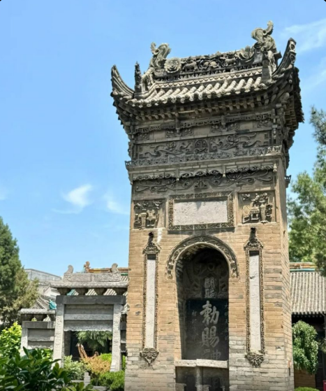
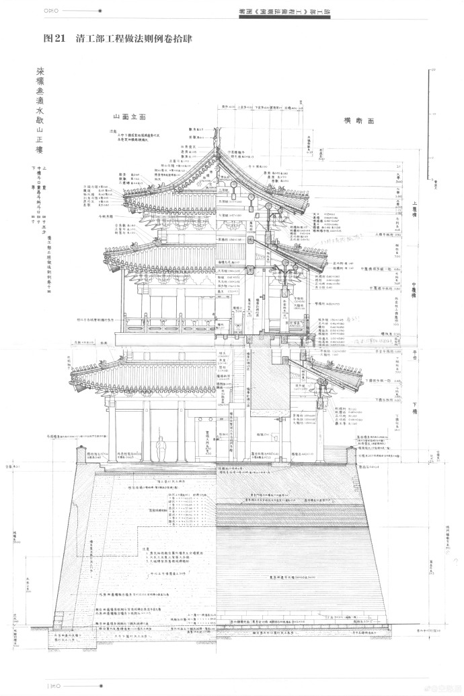
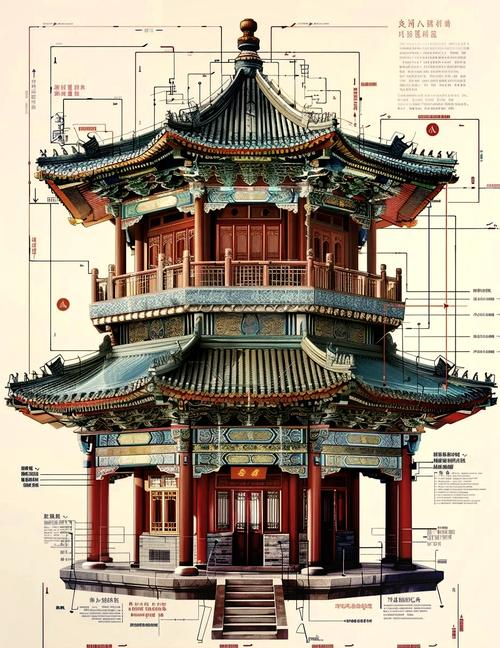
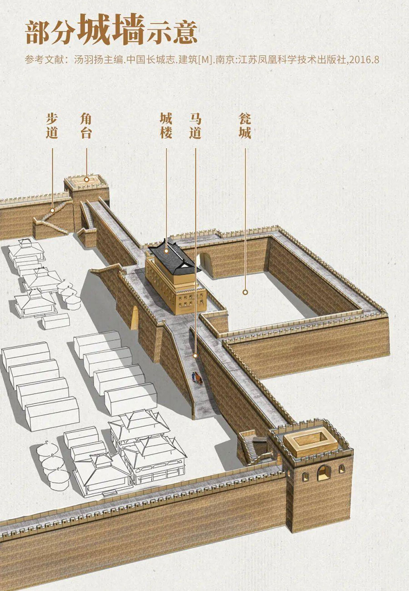





China's architectural landscape is a tapestry of ancient wisdom and modern innovation
See the picture and read about the magnificent architecture of China's imperial palace, discover the majesty of ancient Chinese design and construction techniques.
Read More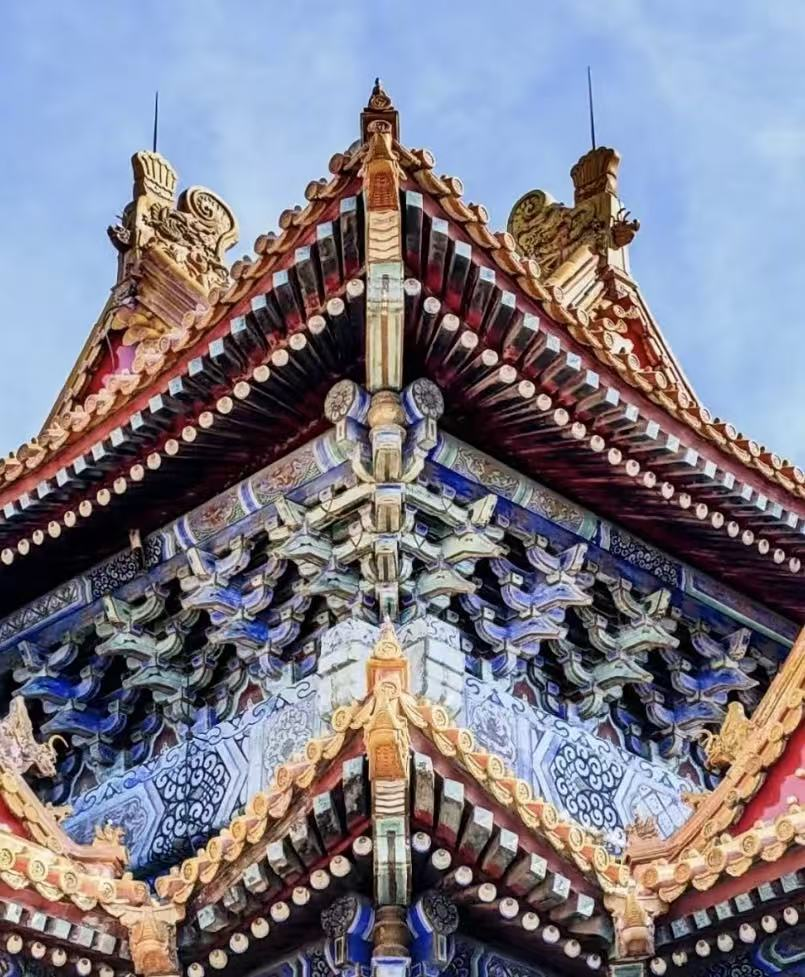
The Dǒugǒng (斗拱) — China's Most Ingenious Invention in Architecture If there is one thing that makes Chinese imperial architecture unique in the entire world, it is the dǒugǒng. This interlocking bracket system
Visual Interactive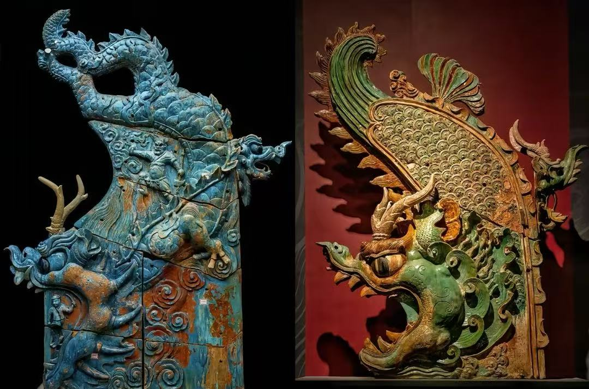
See the picture and explore the intricate details and symbolic elements that make Chinese architecture truly remarkable, from roof statues to decorative patterns.
Explore StatuesImage 1 shows an original Qing Dynasty engineering drawing (清工部工程做法则例) — a cross-section and elevation diagram of the city wall gate tower. This type of drawing, called a 立面图 (lìmiàn tú) — elevation drawing — and 剖面图 (pōumiàn tú) — cross-section drawing — was the working document used by imperial architects and craftsmen to build and maintain the wall across centuries. What makes this drawing extraordinary is its precision. Every measurement is recorded in traditional Chinese units — 丈 (zhàng), 尺 (chǐ), 寸 (cùn) — and every structural element is labeled, from the topmost roof ridge down to the foundation stones below ground
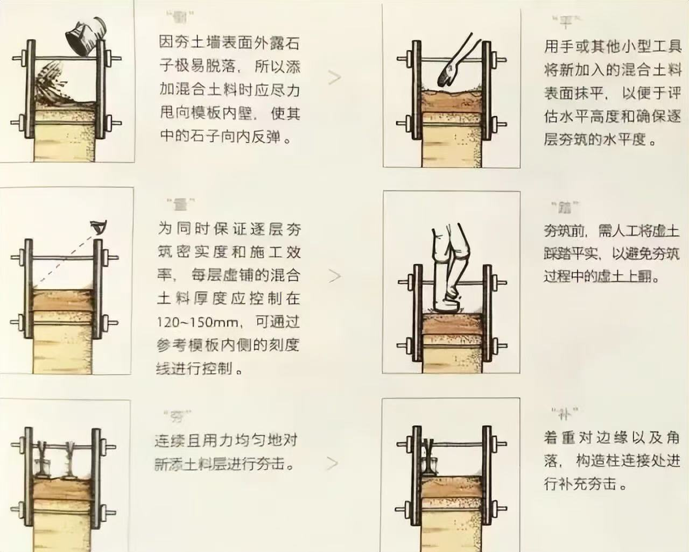
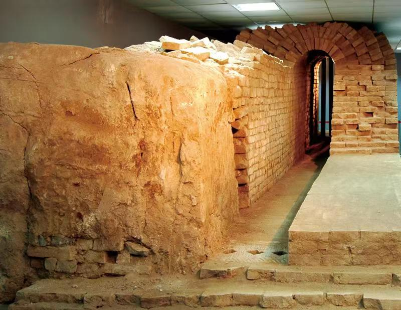
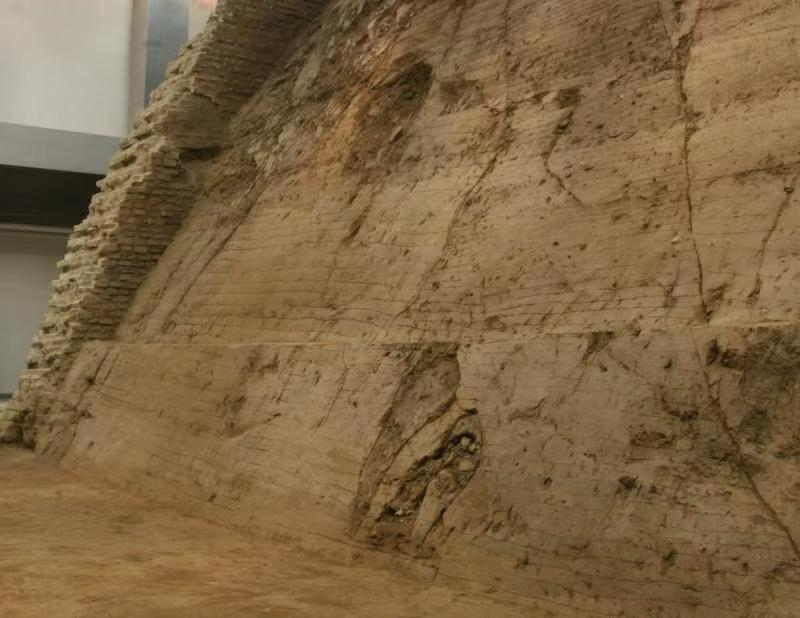
Image 2 shows the step-by-step process of building the wall's core using the ancient technique of 夯土 (hāngtǔ) — rammed earth construction. This is the secret behind the wall's extraordinary durability and the technique that has kept it standing for over 650 years. The process followed six precise steps, each with its own name in the craftsman's tradition:
① 填 (Tián) — Fill Loose earth mixed with lime and organic binders is poured into wooden formwork panels. The craftsman pushes the mixture firmly toward the inner face of the formwork so that stones and coarse material bounce inward, away from the surface, creating a smooth outer face when the formwork is removed.
② 平 (Píng) — Level Using hands or small tools, the newly added mixture is smoothed flat. This step is critical — only a perfectly level layer can be compacted evenly. An uneven layer creates weak points where the wall can crack under pressure over time.
③ 置 (Zhì) — Set the thickness Each layer of loose earth must be controlled to exactly 120–150 mm thick before compaction. The formwork panels have measuring marks carved into their inner faces so craftsmen can check the depth without any additional tools. This precision ensures every layer compacts to the same density throughout the entire wall.
④ 踏 (Tà) — Tread Before ramming begins, workers walk across the loose earth layer, treading it flat with their feet. This pre-compaction step prevents the loose soil from rising up unevenly when the heavy ramming tools strike it — ensuring the compaction force drives downward rather than pushing soil sideways.
⑤ 夯 (Hāng) — Ram Workers use heavy wooden or stone ramming tools to strike the earth layer continuously and evenly. The ramming must be rhythmic and consistent — striking too hard in one spot and too lightly in another creates invisible weak layers inside the wall that can fail centuries later.
⑥ 补 (Bǔ) — Supplement Special attention is given to the edges and corners of the formwork, and to any junction between the new layer and existing structural columns. These transition zones receive additional ramming to ensure no gaps or weak spots remain at the most vulnerable points of the structure. This six-step cycle was repeated layer by layer, panel by panel, until the entire wall reached its full height of 12 metres. The result was a core so dense and hard that modern material testing has shown it to be comparable in compressive strength to low-grade concrete.
The gate tower is the most architecturally complex part of the entire wall system. Unlike the wall itself — which is essentially a massive earthwork — the gate tower is a full timber-frame building constructed in the finest tradition of Chinese imperial architecture, combining every technique seen in the Forbidden City into a single compact structure.
Three-tiered roof system The gate tower has three separate roof levels, each with its own set of sweeping eaves and glazed tile capping. This triple-roof form — called 三重檐 (sān chóng yán) — was reserved for buildings of the highest military and civic importance. Each roof level has its own bracket system (斗拱 dǒugǒng) supporting the eave overhang, creating the layered, rhythmic silhouette that defines the Xi'an skyline.
Technical annotation system The lines and labels overlaid on the image in Image 4 represent a modern architectural survey — the process by which architects today measure and record every dimension of a historic building to create a preservation record. This kind of technical documentation, called 测绘 (cèhuì) in Chinese — measured drawing — is how ancient buildings are studied, repaired, and passed on to future generations. It is the modern continuation of the same tradition seen in the Qing Dynasty drawing in Image 1.
The roof statues of the Forbidden City serve both decorative and spiritual purposes, protecting the imperial buildings from evil spirits and bad fortune.
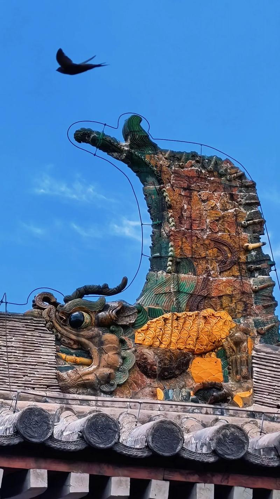
The large dragon-like creatures you see gripping the two ends of every major roof ridge in Chinese imperial architecture are called 鴟吻 (Chīwěn) — one of the most important and visually dramatic elements in all of Chinese architectural tradition. On the Forbidden City's Hall of Supreme Harmony alone, the two chīwěn at either end of the main ridge stand over 3.4 metres tall and weigh more than 4 tonnes each — making them the largest roof ornaments ever created in Chinese history.
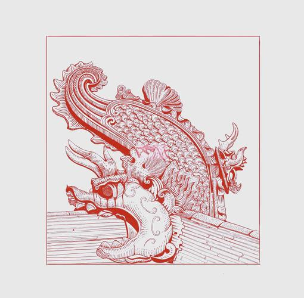
The name 鴟吻 combines two characters: 鴟 (chī) — a type of fierce bird of prey, historically identified as a kite or owl — and 吻 (wěn) — meaning "lips" or "mouth." Together the name describes the creature's most defining characteristic: its open, devouring mouth biting down on the roof ridge. In later dynasties the creature evolved to look far more like a dragon than a bird, and was sometimes also called 龍吻 (lóng wěn) — "dragon mouth" — or simply 正吻 (zhèng wěn) — "correct mouth ornament."
According to ancient Chinese legend, the chīwěn is the second son of the dragon king, a creature that lived in the sea and had the power to summon rain and control fire. Because fire was the greatest threat to timber-frame palace buildings, placing this water-commanding creature at the highest point of the roof was believed to protect the building from fire — the creature's watery nature would suppress any flames that threatened the structure below.